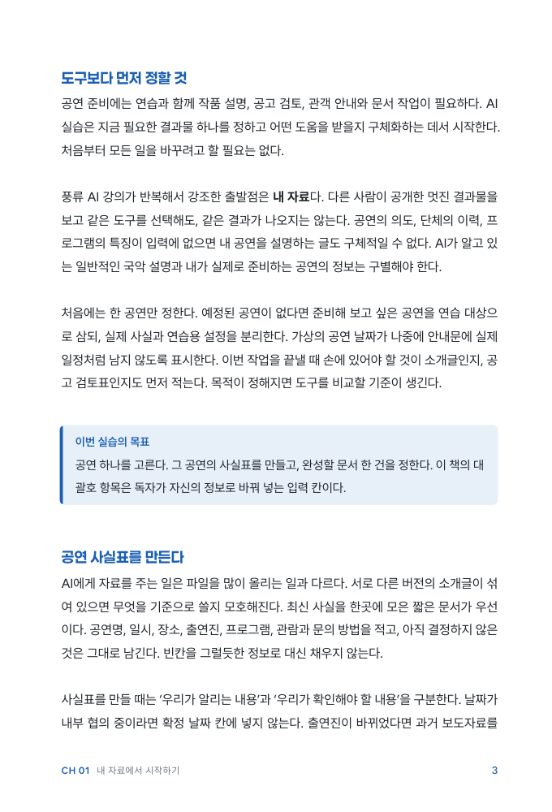
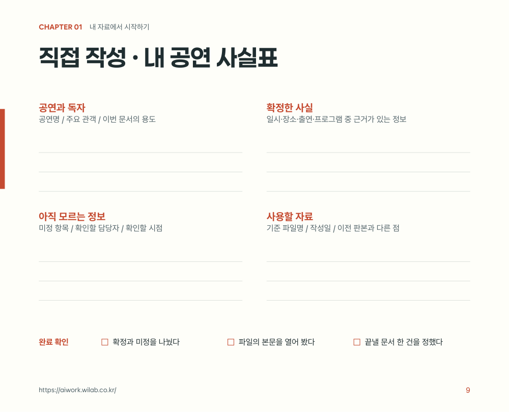
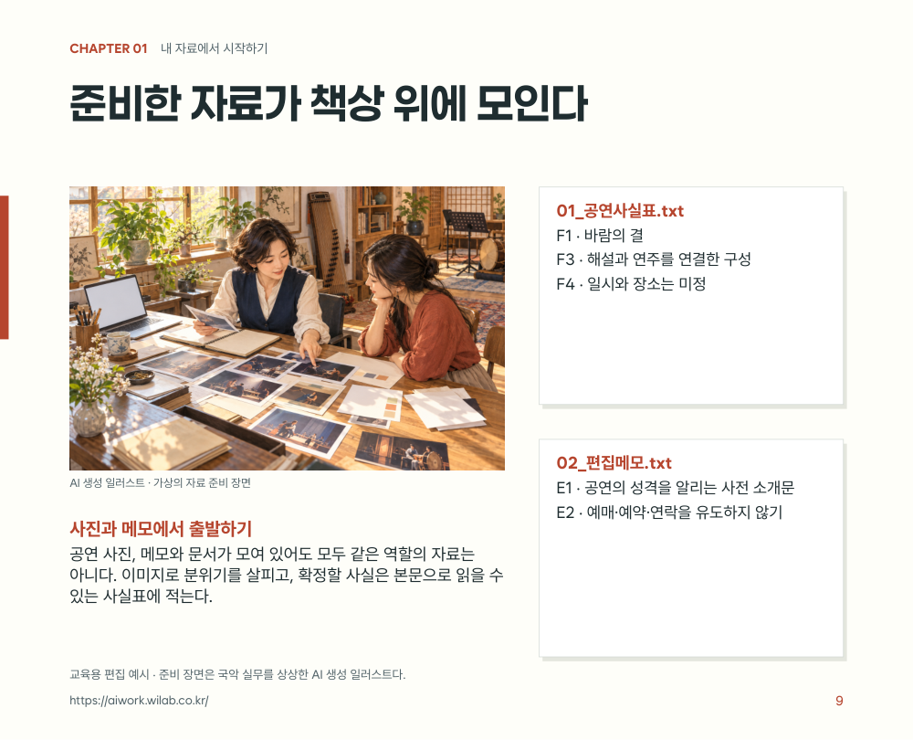

책과 워크북
개념·사례·따라 하기·직접 작성·검토를 한 흐름으로 구성한 50쪽 PDF입니다.
V13 PDF 보기 · 약 28MB ↗의지 · 녹음 · AI 활용
내가 설명한 강의, 오늘 하루의 생각. 녹음으로 남긴 경험을 AI와 정리하고 편집해 책으로 만드는 과정을 보여드립니다. 하나의 원고로 책의 형식과 스타일도 바꿔볼 수 있습니다.
실제 제작 사례는 강의 녹취록 6개로 만든 ‘풍류 AI실무 -01’입니다.
일상 녹음은 이 과정을 적용해 볼 수 있는 실습으로 제안합니다.


강의 녹취록 6개
V13 50쪽
이 프로젝트를 만든 이유
강사는 교안을 만들고, 강의하고, 그 내용을 녹음합니다. 이 프로젝트는 강의 녹취록을 책과 워크북으로 발전시키며, AI를 활용하면 집필과 편집의 시작이 얼마나 쉬워질 수 있는지 보여주기 위해 만들었습니다.
녹음을 다시 들으며 내용을 옮기고, 목차를 짜고, 초안을 쓰던 작업에 AI의 도움을 받습니다. 사람은 남길 이야기를 고르고, 원래 뜻이 살아 있는지 확인하며, 원하는 책의 모습을 정합니다.
시작에 필요한 세 가지
책으로 남기고 싶은 마음이 있다면, 내 목소리부터 기록해 보세요.
누구에게 어떤 이야기를 남길지 정합니다. 거창한 주제가 아니어도 됩니다.
내가 아는 것과 겪은 일을 말로 남깁니다. 강의도, 하루의 짧은 기록도 원천이 됩니다.
녹취를 정리하고 목차·초안·편집 형식을 함께 만듭니다. 마지막 선택과 확인은 내가 합니다.
01 / 먼저 결과를 확인하세요
같은 강의 자료에서 설명을 읽는 책,
직접 써보는 워크북, 시각 예제로 발전시켰습니다.
개념·사례·따라 하기·직접 작성·검토를 한 흐름으로 구성한 50쪽 PDF입니다.
V13 PDF 보기 · 약 28MB ↗원고·글꼴·이미지·조판 스크립트를 함께 보관해 수정과 재제작을 이어갑니다.
편집 자료 받기 · 약 23MB ↓가상 공연 사실표, 요청문, 검토 연습용 초안과 수정 기록을 제공합니다.
실습자료 10개 받기 ↓하나의 원천, 다양한 편집 형식
같은 강의 원천에서 발전한 실제 지면입니다.
판형과 스타일을 바꾸며 실습·예제도 보완했습니다.

설명과 사례를 차근차근 읽는 형식입니다. 강의에서 말한 내용을 글로 따라갑니다.
실제 PDF 6쪽 · 이미지를 누르면 크게 볼 수 있습니다.
읽은 내용을 자기 자료에 적용하는 형식입니다. 질문과 작성 칸으로 실습을 돕습니다.
실제 PDF 9쪽 · 이미지를 누르면 크게 볼 수 있습니다.
작업 장면과 문서 예제를 함께 보는 형식입니다. 실제 활용 모습을 떠올리게 합니다.
실제 PDF 9쪽 · 이미지를 누르면 크게 볼 수 있습니다.기준 원고와 수정 기록을 남겨두면, 다음 작업에서 독자와 목적에 맞는 편집을 이어갈 수 있습니다. 판본별 제작 기록 보기
02 / 내 자료로 따라 해보세요
강의 사례에서 사용한 순서와 요청 예시입니다.
내 기록에도 같은 흐름을 적용해 보세요.
내가 녹음한 강의나 하루의 기록을 글로 옮긴 녹취록, 읽을 사람과 책의 목적. 공개 실습에는 책에서 사용한 가상 공연 자료를 활용할 수 있습니다.
먼저 녹음을 글로 옮기고, 이름이나 고유명사처럼 잘못 옮겨진 부분을 확인합니다. 강의에서는 개념·사례·질문·실습을, 일상 기록에서는 사건·생각·감정을 찾아 묶습니다.
“이 녹취록에서 책에 담을 내용과 반복되는 주제를 정리해 줘. 각 항목의 원문 위치도 함께 표시하고, 잘못 옮겨졌을 수 있는 표현은 내가 확인할 수 있게 남겨 줘.”
확인할 결과 원문과 연결된 내용 목록
독자가 이미 아는 것과 새로 배워야 할 것을 구분합니다. 장마다 답할 질문과 직접 해볼 과제를 정합니다.
“이 자료를 처음 배우는 독자를 위한 목차를 제안해 줘. 장마다 핵심 질문, 사례, 직접 해볼 과제를 하나씩 연결해 줘.”
확인할 결과 독자·학습 목표·장별 구성
확인된 사실과 편집자가 보충한 설명을 구별합니다. 서비스 기능처럼 바뀌는 정보는 적용 조건과 확인 시점을 기록합니다.
“이 장의 원고를 작성해 줘. 원자료에 없는 설명은 보충 설명으로 구분하고, 모르는 정보는 추정하지 말고 확인할 항목으로 남겨 줘.”
확인할 결과 기준 원고·출처·미정 정보 목록
GitHub에 공개된 BookForge 스킬을 Codex에서 활용했습니다. 이 프로젝트에서는 가로형 워크북에 맞게 조판과 검수 스크립트를 확장했습니다.
“이 원고를 교육용 책자로 구성해 줘. 목차·장 도입·본문·실습 지면을 구별하고, 글자 크기·행간·여백을 일관되게 적용해 줘.”
확인할 결과 읽고 수정할 수 있는 PDF 초안
BookForge 저장소·설치 안내 ↗관계를 설명할 때는 도해를, 실제 행동을 보여줄 때는 장면을, 활용 모습을 보여줄 때는 문서 예제를 씁니다. 그림 속 글자 대신 편집 가능한 조판 텍스트를 배치합니다.
“이 설명에서 그림으로 이해를 도울 부분을 골라 줘. 도해, 작업 장면, 결과물 예제 중 적합한 형식과 이유를 제안해 줘.”
확인할 결과 본문과 역할이 연결된 시각 자료
원자료와의 의미 일치, 글자와 이미지 배치, 목차와 쪽수, 실습의 연결성을 확인합니다. 이전 판본은 보존하고 바꾼 이유를 기록합니다.
“이전 판본과 비교해 무엇이 좋아졌고, 어디가 아직 불편한지 보여줘. 수정 이유와 다음에 확인할 항목을 정리해 줘.”
확인할 결과 새 판본·변경표·다음 수정 목록
V12 → V13 변경표 받기 ↓직접 해볼 적용 예시 · 일상 녹음
잠들기 전, 오늘 기억에 남은 일을 내 목소리로 이야기해 보세요. 녹음을 글로 옮기고 AI와 다듬으면 하루의 기록 한 편을 만드는 출발점이 됩니다.
기록이 쌓이면 날짜순 일기, 주제별 에세이, 나만의 경험집으로 구성을 바꿔볼 수 있습니다. 어떤 책으로 남길지는 내가 정합니다.
일상 책은 앞으로 직접 시도해 볼 실습 제안입니다. 이 사이트의 실제 제작 사례는 강의 녹취록으로 만든 책과 워크북입니다.
책으로 만드는 순서 보기오늘의 녹음 질문
녹취록을 준비했다면, 이렇게 요청해 보세요.
다음은 내가 녹음한 오늘의 기록이야. 내 말투를 살려 제목 하나와 짧은 일기 한 편으로 정리해 줘. 원문에 없는 사건이나 감정은 지어내지 말고, 뜻이 불분명한 부분은 나에게 질문해 줘.
03 / 결과와 판단을 함께 남깁니다
표지·본문·시각 자료를 바꿀 때마다
선택한 이유와 남은 개선점을 기록했습니다.

반복되는 장 도입 구성, 일부 지면의 큰 빈 공간, 그림과 실제 문구의 연결, 캡션 교정을 개선 과제로 남겼습니다.
04 / 사용한 도구와 스킬
사용자는 목적과 디자인 방향을 정하고 결과물을 보며 수정 의견을 냈습니다. Codex와 제작 스킬은 이를 원고·조판·이미지·비교 자료로 구현했습니다.
같은 과정, 다른 목적
자료·독자·검수 기준을 바꾸어 확장하는 구성 예시를 살펴보세요.
05 / 공공기관·기업 워크숍
교육 자료를 새로 만들거나, 쌓인 설명과 경험을 재사용하고 싶은 조직을 위한 실습입니다. 대상과 보유 자료, 만들고 싶은 결과물에 맞춰 진행 범위를 협의합니다.
ceo@wilab.co.kr ↗https://aiwork.wilab.co.kr/ ↗메일 앱에서 요청 내용을 확인하고 직접 보내세요.